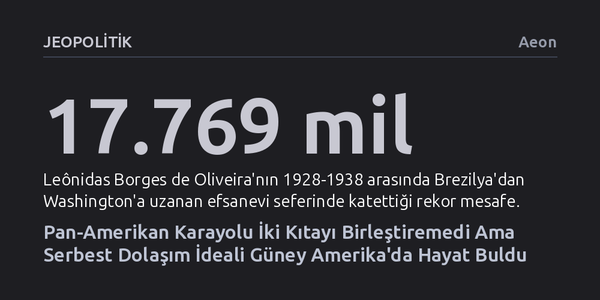

JEOPOLITIK · Aeon · 2026-09-08
Bir asır önce iki kıtayı pasaportsuz bağlama vaadiyle başlayan Pan-Amerikan Karayolu, kuzeyde sınırları sertleştirip Darién Boşluğu'nda tıkandı. Buna karşın otoyolun vadettiği serbest dolaşım ideali, ABD'nin dışında, Güney Amerika ülkelerinin kurduğu sınırsız göç bölgesinde hayat buldu.
Altyapı yatırımlarının sınırları kendiliğinden eriteceği varsayımını çürüterek, Pan-Amerikan Karayolu'nun coğrafi engellerden ziyade göç korkusuyla yarım bırakıldığını ve asıl serbest dolaşım devriminin sanılanın aksine Güney Amerika'da gerçekleştiğini gösteriyor.

1920'lerin başında ortaya atılan Pan-Amerikan Karayolu fikri, yalnızca Alaska ile Arjantin'i birbirine bağlayacak devasa bir asfalt şerit inşa etme projesi değildi. Bu girişim, Batı Yarımküre'deki tüm ulusları modern bir ulaşım ağıyla kenetlemeyi; gümrükleri, pasaportları ve sınır engellerini ortadan kaldırarak kıtalararası gerçek bir kardeşlik bağı kurmayı hedefliyordu. Otomobilin yeni yeni yaygınlaştığı o dönemde yol, insanlara yeryüzünde dilediği yere serbestçe seyahat etme, yerleşme ve yaşama hakkı sunacak evrensel bir vaat olarak görülüyordu.
Bu idealden büyülenen genç Brezilyalı subay Leônidas Borges de Oliveira, 1928 yılında emektar bir Ford Model T ile Rio de Janeiro'dan yola çıkarak Washington'a uzanacak akılalmaz bir keşif sürüşüne girişti. Karayolunun henüz haritalarda bile bulunmadığı, bataklıkların, nehirlerin ve dağ geçitlerinin geçit vermediği coğrafyalarda neredeyse on yıl boyunca ilerledi. Yolun tükendiği sarp arazilerde araçlarını parça parça söküp katır sırtında taşıdı, Nikaragua'da devrimci lider Augusto Sandino ile görüştü ve geçtiği her kasabada bir kahraman gibi karşılanarak bu rotanın karadan aşılabileceğini kanıtladı.
Ne var ki Oliveira 1938'de Washington'a ulaştığında soğuk bir kibirle karşılaştı. Kendi haritacılarının bile yürüyerek geçemediği bu güzergâhın külüstür otomobillerle aşıldığına inanmak istemeyen ABD'li yetkililer, Oliveira'yı bir şarlatan olarak yaftaladı. Yerli ve Afrika kökenli bir Güney Amerikalının getirdiği 500 sayfalık seyir defteri ve yüzlerce resmi kanıt görmezden gelindi. Oliveira ülkesine kırgın döndü ve kıtaları birleştirme rüyası daha ilk adımında kurumsal bir inkâr duvarına çarptı.
Maddi açıdan bakıldığında Pan-Amerikan Karayolu projesi muazzam bir mühendislik başarısına dönüştü; on yıllar içinde milyonlarca kilometrelik yol açılarak kıtanın en ücra köşeleri tekerlekli araçların erişimine sunuldu. Ancak projenin asıl trajedisi, yol ağları genişledikçe ulusal sınırların yumuşamak yerine tam aksine daha da katılaşmasıydı. 1920'lerden önce Amerika kıtasındaki sınırlar çoğunlukla belirsizdi; insanlar pasaport ve kimlik aranmaksızın sınır kasabalarında iç içe yaşıyor, Latin Amerika devletleri kıtaya gelen göçmenlere ücretsiz toprak dağıtıyordu.
Karayolunun inşasıyla birlikte kıtada siyasi iklim hızla tersine döndü. Dönemin ABD Başkanı Calvin Coolidge bir yandan kıtalararası dostluk yolunu överken, diğer yandan 1924'te "Amerika Amerikalı kalmalıdır" diyerek göçmen kotalarını yüzde 80 budayan ayrımcı Johnson-Reed Yasası'nı imzaladı. Bu korumacı dalga Orta Amerika'ya da sıçradı; sınırlar boyunca polis noktaları, pasaport zorunlulukları ve sınır dışı uygulamaları tam da karayollarının sınırlara ulaştığı dönemde kurumsallaştı.
Böylece otoyol, vadedildiği gibi tüm insanların serbestçe kaynaştığı bir kardeşlik köprüsü değil, sınıfsal bir filtreleme mekanizması hâline geldi. Otomobiliyle seyahat eden ayrıcalıklı turistler sınırlardan bürokratik engellere takılmadan kabul edilirken, aynı yolları daha iyi bir gelecek için yürüyerek aşmaya çalışan yoksul kitleler resmi engellerle geri çevrildi. Karayolu, otomobili olmayanlar için kapıların yüzlerine kapandığı yeni bir tecrit aracına dönüştü.
Kıtalararası karayolunun en belirleyici kırılması, Panama ile Kolombiya sınırındaki Darién Boşluğu'nda yaşandı. Kuzey ve Güney Amerika'yı ayıran bu balta girmemiş bataklık ve orman kuşağında yol aniden kesildi ve 1980'lerden bu yana aradaki bağlantıyı tamamlamak için tek bir metre bile asfalt dökülmedi. İlginç bir biçimde, Kuzey Amerikalıların büyük çoğunluğu otoyolun kesintisiz açık olduğuna inanmayı sürdürdü; 1970'lerde karavanlarıyla yola çıkıp Panama ormanlarında yolun bittiğini görünce şaşkınlıkla geri dönen turistler bu kolektif yanılsamanın kurbanı oldu.
Darién Boşluğu'nun bugün hâlâ kapalı kalmasının ardındaki temel neden aşılmaz coğrafi engeller değil, bilinçli bir jeopolitik tercihtir. Panama hükümeti ve ABD diplomasisi, bu bölgeye inşa edilecek bir karayolunun güneyden gelecek yoksul göçmenler için bir ekspres hatta dönüşeceğinden çekinerek yolu bilerek tamamlamadı. Başlangıçta aşılması gereken bir doğa engeli olarak görülen bataklıklar, zamanla Panama'nın ve Kuzey Amerika'nın doğal "sınır duvarı" olarak benimsendi.
Ne var ki yolun bulunmaması göçü durdurmaya yetmedi, yalnızca onu çok daha ölümcül kıldı. Her yıl yüz binlerce çaresiz insan, resmî sınır kapısı ve altyapı bulunmayan bu tehlikeli bataklıkları haftalarca yürüyerek aşmaya çalışıyor. Karayolu bulunmadığı için resmî sınır denetiminin de yapılamadığı bu vahşi coğrafya, kıtanın en savunmasız göçmenleri için bir ölüm kalım koridoruna dönüşmüş durumda.
Pan-Amerikan otoyolunun temsil ettiği sınırsız kıta ideali Kuzey ve Orta Amerika'da bürokratik engeller ve tel örgüler altında ezilse de, asıl vaat beklenmedik bir coğrafyada gerçeğe dönüştü. Tarih boyunca sınır savaşları ve diplomatik gerilimler yaşamış olan Güney Amerika ulusları, 2010 yılından itibaren radikal bir paradigma değişimine imza attı. Göçü bir güvenlik tehdidi olarak görmek yerine bir çözüm olarak tanımlayan bu ülkeler, kendi aralarındaki sınırları göç bağlamında fiilen ortadan kaldırdı.
Bugün Güney Amerika, dünyanın en kapsamlı serbest dolaşım ve yerleşim alanlarından birine ev sahipliği yapıyor. Anlaşmaya taraf olan dokuz ülkenin yurttaşları, herhangi bir vizeye veya pasaporta ihtiyaç duymadan bir diğer üye ülkeye yerleşebiliyor, iş kurabiliyor, kamu okullarına ve sağlık hizmetlerine eşit koşullarda erişebiliyor. Dahası, göçmenler yalnızca iki yıllık ikamet süresinin ardından tam vatandaşlık başvurusunda bulunma hakkına kavuşuyor.
Arjantin'de Javier Milei gibi sağ popülist liderlerin egemenlik temelli çıkışlarına ve itirazlarına rağmen bu bölgesel entegrasyon modeli ayakta kalmayı sürdürüyor. Bir asır önce Oliveira'nın külüstür arabasıyla peşinden koştuğu pasaportsuz ve gümrüksüz birlik hayali; ABD'nin sınır duvarları ördüğü, Panama'nın ormanları kalkan yaptığı bir dünyada, ironik bir biçimde güneyin kendi dayanışmasıyla hayat bulmuş durumda.